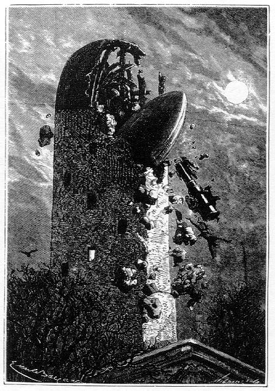
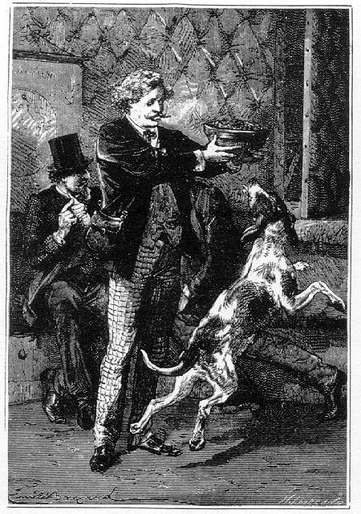
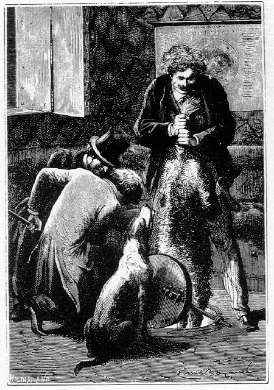

Capítol V
ELS FREDS
DE L'ESPAI
Aquesta revelació
fou com un llamp. ¿Qui s'havia de creure en un semblant error de càlcul?
Barbicane no hi volia ni pensar. Nicholl revisà les seves xifres. Eren
exactes. Quant a la fórmula que les havia determinades, no es podia dubtar
de la seva exactitud, i, un cop feta la comprovació, va quedar ben demostrat
que una velocitat inicial de setze mil cinc-cents setanta-sis metres en el primer
segon era necessària per assolir el punt neutral.1
Els tres amics es miraren en silenci. De l'esmorzar, ni se'n parlava. Barbicane,
amb les dents estretes, les celles arrufades, els punys closos convulsivament,
observava a través de la lluerna. Nicholl, plegat de braços, examinava
els seus càlculs. Miquel Ardan murmurava.
-Heus aquí el que són els savis! No hi ha ningú com ells!
Donaria vint pesos2 per caure damunt de l'Observatori de
Cambridge i ensorrar-lo amb tots els seus embrolladors de xifres!

Donaria vint pesos per caure damunt de l'Observatori de Cambridge
Tot d'una, el capità féu una reflexió adreçada a
Barbicane.
-Vejam - digué -, són les set del matí! Hem sortit fa trenta-dues
hores. Més de la meitat del nostre trajecte està recorregut, i
nosaltres no caiem, que jo sàpiga!
Barbicane no respongué. Però, després de llançar
una ràpida mirada damunt el capità, prengué un compàs
que li servia per a mesurar la distància angular del globus terrestre.
Després, a través del vidre inferior, féu una observació
molt exacta, considerant la immobilitat aparent del projectil. Aixecant-se i
eixugant-se el front, on perlejaven algunes gotes de suor, féu algunes
xifres damunt el paper. Nicholl comprenia que el president volia deduir de la
mesura del diàmetre terrestre la distància de la bala a la Terra,
i el guaitava ansiosament.
-No exclamà Barbicane després d'alguns instants -, no, no caiem!
Estem a més de cinquanta mil llegües de la Terra!3
Hem passat ja del punt on el projectil s'hauria hagut d'aturar si la seva velocitat
no hagués estat d'onze mil metres al moment de la sortida. Continuem
pujant!
-És evident - respongué Nicholl -, i hem de concloure que la nostra
velocitat inicial, sota l'arrencada de les quatre-centes mil lliures de cotó
fulminant, han sobrepassat els onze mil metres exigits. Així, ara m'explico
que al cap de tretze minuts hàgim trobat el segon satèl·lit
que gravita a més de dues mil llegües de la Terra.4
-I aquesta explicació és tant més probable - afegí
Barbicane - que, en engegar l'aigua reclosa entre els seus envans corredissos,
el projectil s'ha trobat sobtadament alleugerit d'un pes considerable.5
-Justament féu Nicholl.
-Ah! estimat Nicholl - va exclamar Barbicane -, estem salvats!
-Doncs bé - respongué tranquil·lament Miquel Ardan -, ja
que estem salvats, esmorzem.
En efecte, Nicholl no s'equivocava.
La velocitat inicial havia estat, molt feliçment, superior a la velocitat
indicada per l'observatori de Cambridge, però no per això l'observatori
de Cambridge havia deixat d'equivocar-se.
Els viatgers, refets d'aquella falsa alarma, s'entaularen i esmorzaren joiosament.
Si molt menjaren, no per això deixaren de parlar més encara. La
confiança era més gran després que no abans de l'"incident
d'àlgebra".
-Per què no havíem de reeixir? - repetia Miquel Ardan -. Per què
no hi havíem d'arribar? Ens hem engegat. No hi ha obstacles davant nostre.
No hi ha pedres en el nostre camí. La via està lliure, més
lliure que la del vaixell en el mar i més lliure que la del globus que
lluita contra el vent! Ara bé, si una nau arriba allà on vol i
si un globus ascendeix allí on li plau, ¿per què el nostre
projectil no ha d'arribar a la meta que s'ha proposat?
-Hi arribarà - digué Barbicane.
-Encara que només fos per honorar el poble americà - afegí
Miquel Ardan -, l'únic poble que ha estat capaç de dur a terme
una tal empresa, l'únic que pot donar un president Barbicane! Ah! se
m'acudeix una cosa, ara que no tenim cap més inquietud: ¿què
farem nosaltres? Ens avorrirem molt!
Barbicane i Nicholl feren un gest negatiu.
-Però jo ja he previst el cas, amics meus - continuà dient Miquel
Ardan -. No heu de fer sinó parlar. Tinc a la vostra disposició
jocs d'escacs, dames, cartes, dòmino. Només em manca un billar!
-Com! - preguntà Barbicane -, ¿Tots aquests fòtils t'has
emportat?
-Ja ho crec - respongué Miquel -, i no solament per distreure'ns, sinó
també amb la bona intenció de regalar-ne als cafès selenites.
-Amic meu - digué Barbicane -, si la Lluna està habitada, els
seus habitants han aparegut alguns milers d'anys abans que els de la Terra,
car no es pot dubtar que aquell astre és més vell que el nostre.
Així, doncs, si els selenites existeixen des de centenars de mils d'anys,
si llur cervell està organitzat com el cervell humà, han inventat
tot el que nosaltres ja hem inventat, i àdhuc el que inventarem al llarg
dels segles. No hauran d'aprendre res de nosaltres, i, en canvi, nosaltres haurem
d'aprendre molt d'ells.
-Com! - respongué Miquel -, ¿tu creus que han tingut artistes
com Fídias, Miquel Àngel o Rafael?
-Sí.
-¿Poetes com Homer, Virgili, Milton, Lamartine i Hugo?
-N'estic segur.
-Filòsofs com Plató, Aristòtil, Descartes i Kant?
-No en dubto gens.
-¿Savis com Arquimedes, Euclides, Pascal i Newton?
-Ho juraria.
-Còmics com Arnal i fotògrafs com... com Nadar? 6
-N'estic cert.
-Llavors amic Barbicane, si són tan forts com nosaltres i àdhuc
més forts aquests selenites, ¿per què no han intentat de
comunicar-se amb la Terra? ¿Per què no han llençat un projectil
fins a les regions terrestres?
-I qui et diu que no ho hagin fet? - respongué seriosament Barbicane.
-En efecte - afegí Nicholl -, això els era més fàcil
que a nosaltres, i per dues raons: la primera, perquè l'atracció
és sis vegades menor a la superfície de la Lluna que no a la superfície
de la Terra, la qual cosa permet a un projectil d'enlairar-se més fàcilment,
i la segona raó, perquè n'hi havia prou d'enviar aquest projectil
a vuit mil llegües7 en lloc de vuitanta mil, cosa
que no exigeix més que una força de projecció deu vegades
menys forta.
-Llavors - reprengué Miquel -, repeteixo: ¿per què no ho
han fet?
-I jo - replicà Barbicane -, et repeteixo: ¿i qui et diu que no
ho hagin fet?
-Quan?
-Milers d'anys abans de l'aparició de l'home damunt la Terra.
-I la bala? On és
la bala? Jo vull veure la bala!
-Amic meu - respongué Barbicane -, el mar cobreix les cinc sisenes parts
del nostre globus. Vet aquí cinc bones raons per a suposar que el projectil
lunar, si ha estat engegat, està actualment submergit al fons de l'Atlàntic
o del Pacífic. A menys que s'hagi anat a enterrar en alguna esquerda,
en l'època que l'escorça terrestre no estava del tot formada.
-Estimat Barbicane - respongué Miquel -, tu tens resposta per a tot i
jo m'inclino davant la teva saviesa. Així i tot, hi ha una hipòtesi
que em fa més gràcia que les altres. Aquesta no és sinó
que els selenites, essent més vells que nosaltres, són més
prudents i no han inventat la pólvora!
En aquell moment Diana es ficà en la conversa amb un fort lladruc. Reclamava
el seu esmorzar.
-Ah! - féu Miquel Ardan -, amb aquestes discussions ens hem oblidat de
Diana i de Satèl·lit.

Un refrigeri respectable
I tot seguit un bon plat de menjar fou ofert a la gossa, que el devorà
amb molta gana.
-Veus, Barbicane? - deia Miquel -, hauríem hagut de fer d'aquest projectil
una segona arca de Noé i haver-nos dut a la Lluna una parella de tots
els animals domèstics!
-Sens dubte - respongué Barbicane -, però hauria faltat lloc.
-Vaja! - digué Miquel -, ja ens hi hauríem encabit.
-El fet és - respongué Nicholl - que bou, vaca, toro o cavall,
tots aquests ruminants ens serien molt útils en el continent lunar. Però,
per dissort, aquest vagó no podia convertir-se en una quadra o en un
estable.
-Més o menys - digué Miquel Ardan -, sí que hauríem
pogut endur-nos un ase, només que un burret, aquesta coratjosa i pacient
bèstia a la qual tant plaïa de muntar al vell Silè! Jo me'ls
estimo, els pobres ases! Són bén bé els animals menys afavorits
de la creació. No solament els peguem durant la vida, sinó que
encara els continuem pegant fins després de morts!
-Com s'entén això? - preguntà Barbicane.
-Caram! - féu Miquel -, perquè d'ells se'n fan les pells per als
tambors!
Barbicane i Nicholl no pogueren menys de riure davant d'aquesta sortida. Però,
un crit del seu joiós amic els sobtà. Aquest, que s'havia inclinat
cap al cau on es trobava Satèl·lit, es redreçava tot dient:
-Vaja! Satèl·lit ha deixat d'estar malalt.
-Ah! - féu Nicholl.
-No - reprengué Miquel -, és mort. Vet aquí - afegí
en un to de veu llastimós -, vet aquí una cosa que em contraria
molt. I molt em temo, pobra Diana meva, que no podràs criar a les regions
lunars.
Efectivament, el malaurat Satèl·lit no havia pogut sobreviure
a la seva ferida. Era mort i ben mort. Miquel Ardan, molt atribolat, guaitava
els seus amics.
-Aquí se'ns presenta un problema - digué Barbicane -. No podem
guardar entre nosaltres el cadàver d'aquest gos durant quaranta-vuit
hores.
-No, certament - féu Nicholl -, però les nostres lluernes estan
fixades per frontisses i, per tant, poden obrir-se. N'obrim una de les dues
i llencem aquest cos a l'espai.
El president reflexionà alguns instants i digué:
-Sí, caldrà fer-ho així, però prenent les més
mínimes precaucions.
-Per què? - preguntà Miquel.
-Per dues raons que tot seguit comprendràs - respongué Barbicane
-. La primera és relativa a l'aire clos en el projectil, i del qual convé
perdre el menys possible.
-Però si el refem, aquest aire!
-En part solament. Només refem l'oxigen, estimat Miquel; i, a propòsit
d'això, cal tenir molt en compte que l'aparell no el produeixi en quantitat
excessiva, car aquest excés ens ocasionaria trastorns fisiològics
molt greus. Però, si bé nosaltres refem l'oxigen, no refem el
nitrogen, aquest vehicle que els pulmons no absorbeixen i que ha de restar intacte.
I aquest gas azot s'escaparia ràpidament un cop fossin obertes les lluernes.
-Oh! el temps just de llençar aquest pobre Satèl·lit i
prou - digué Miquel.
-D'acord, però ho hem de fer ràpidament.
-I la segona raó? - preguntà Miquel.
-La segona raó és que no convé deixar penetrar dins el
projectil el fred exterior, que és excessiu, sota pena de restar gelats.
-No obstant, el Sol...
-El Sol escalfa el nostre projectil, que n'absorbeix els raigs, però
no escalfa el buit on flotem en aquest moment. On no hi ha aire no hi ha calor
ni llum difusa, i, així com tot és fosc, fa fred allí on
els raigs del Sol no arriben directament. Aquesta temperatura no és,
doncs, altra que la produïda per la irradiació estellar, o sigui
la que patiria el globus terrestre si el Sol s'apagava un dia.
-Cosa que no és d'esperar que s'esdevingui - respongué Nicholl.
-Qui sap? - digué Miquel Ardan -. A més, admetent que el Sol no
s'apagui, ¿no pot ocórrer que la Terra s'allunyi d'ell?
-Vaja! - féu Barbicane -, ja surt en Miquel amb els seus acudits!
-Ei! - reprengué Miquel -, ¿que no sabem tots que la Terra va
travessar la cua d'un cometa en 1861? Doncs, suposem un, cometa en què
l'atracció sigui superior a l'atracció solar, l'òrbita
terrestre s'encorbarà devers l'astre errant i la Terra, esdevinguda el
seu satèl·lit, serà arrossegada a una distància
tal que els raigs del Sol ja no tindran cap acció a la seva superfície.
-Això pot produir-se, en efecte - respongué Barbicane -, però
les conseqüències d'un desplaçament semblant podrien no ésser
tan temibles com tu suposes.
-I per què?
-Perquè el fred i la calor s'equilibrarien encara en el nostre globus.
S'ha calculat que, si la Terra hagués estat arrossegada pel cometa del
1861,8 hauria experimentat, en la seva major distància
del Sol, una calor que no hauria arribat a setze vegades la que ens envia la
Lluna, calor que, concentrada a les lents més poderoses, no produeix
cap efecte sensible.
-I què? - féu Miquel.
-Espera una mica - respongué Barbicane -. S'ha calculat també
que en el seu periheli, o sigui a la distància més propera del
Sol, la Terra hauria suportat una calor igual a vint-i-vuit mil vegades la de
l'estiu. Però aquesta calor, capaç de vitrificar les matèries
terrestres i de vaporitzar les aigües, hauria format un espès anell
de núvols que hauria rebaixat aquella temperatura excessiva. I aquí
tenim, compensació entre els freds de l'afeli i les calors del periheli,
una temperatura mitjana probablement suportable.
-Però ¿en
quants graus s'estima la temperatura dels espais planetaris? - preguntà
Nicholl.
-En altres temps - respongué Barbicane -, hom creia que aquesta temperatura
era excessivament baixa. Calculant la seva disminució termomètrica,
hom arribava a calcular-la per milions de graus sota zero. I és Fourier,
un compatriota de Miquel, un iliustre savi de l'Acadèmia de Ciències,
qui ha posat aquests nombres en unes més ajustades avaluacions. Segons
ell, la temperatura de l'espai no davalla més enllà de seixanta
graus.
-Vaja! - féu Miquel.
-És aproximadament - respongué Barbicane - la temperatura que
fou observada a les regions polars, a l'illa de Melville o al fort Reliance,
o sigui vora cinquanta-sis graus centígrads sota zero.9
-Només resta a provar - digué Nicholl - que Fourier no s'hagi
excedit en les seves avaluacions. Si no m'enganyo, un altre savi francès,
Pouillet, estima la temperatura de l'espai en cent seixanta graus sota zero.
I això és el que nosaltres comprovarem.
-No pas en aquest moment - féu Barbicane -, car els raigs solars, tocant
directament el nostre termòmetre, donarien, al contrari, una temperatura
massa elevada. Però quan haurem arribat a la Lluna, durant les nits de
quinze dies que experimenta alternativament cadascuna de les seves fases, tindrem
temps de fer aquest experiment, car el nostre satèl·lit es mou
en el buit.
-Però què entens tu per buit? - preguntà Miquel -, què
es el buit?
-El buit absolutament privat d'aire.
-I en el qual l'aire no ha estat reemplaçat per res?
-Sí. Per l'èter - respongué Barbicane.
-Ah! I què és l'èter?
-L'èter, amic meu, és una aglomeració d'àtoms imponderables
que, relativament a llurs dimensions, segons diuen les obres de física
molecular, estan tan allunyats els uns dels altres com els cossos celestes ho
estan en l'espai. Llur distància, malgrat tot, és inferior a unes
tres milionèssimes de mil·límetre. Aquests àtoms,
que, per llur moviment vibratori, produeixen llum i calor, fan per segon quatrecents
trenta trilions d'ondulacions, i no tenen més de quatre a sis deumil·lèsimes
de mil·límetres d'amplària.
-Milions de milions! - exclamà Miquel Ardan -, és a dir, doncs,
que les han amidades i comptades, aquestes oscil·lacions! Tot això,
amic Barbicane, són xifres amb les quals els savis espanten l'orella
però que no diuen res a l'esperit.
-Així i tot convé fer-les servir...
-No. Val més comparar. Un trilió no significa res, i un objecte
de comparació ho diu tot. Per exemple: quan tu m'hauràs repetit
que el volum d'Urà és cinquanta-nou. vegades més gran que
el de la Terra, el de Saturn set-centes seixanta-tres vegades, el de Júpiter
mil tres-centes dotze vegades i el del Sol un milió tres-centes mil vegades,
em trobaré igual que abans. Per tant, jo prefereixo, i de molt, aquelles
velles comparacions del Double Liégeois que us diu tot simplement: El
Sol és una carbassa de dos peus de diàmetre; Júpiter, una
taronja; Saturn, una poma; Neptú, una guinda; Urà, una cirera
de les grosses; la Terra, un cigró; Venus, un pèsol; Mart, un
cap d'agulla; Mercuri, un gra de mostassa i Junus, Cera, Vesta i Pal·las,
simples granets de sorra! És així com hom en té una idea
aproximada!
Després d'aquesta sortida de Miquel Ardan contra els savis i els trilions
que ells arrengleren sense pestanyejar, es va procedir a l'amortellament de
Satèl·lit. Es tractava simplement de llençar-lo a l'espai,
de la mateixa manera que els mariners llencen un cadàver al mar.

Satèl·lit fou projectat al defora
Però, tal com ho havia recomanat el president Barbicane, convenia fer
aquesta operació amb tota rapidesa a fi de perdre el menys possible d'aquell
aire que per la seva elasticitat s'hauria escampat de seguida en el buit. Foren
descargolats curosament els passadors de la lluerna de la dreta, en què
l'obertura feia prop de trenta centímetres, mentre Miquel, tot compungit,
es disposava a llençar el seu gos a l'espai. El vidre, aixecat per un
poderós alçaprem que permetia de vèncer la pressió
de l'aire interior sobre les parets del projectil, girà ràpidament
sobre les seves frontisses, i Satèl·lit fou projectat al defora.
Amb prou feines si algunes molècules d'aire s'escamparen, i l'operació
reeixí tan bé que, més endavant, Barbicane, no tingué
por de desempallegar-se també de deixalles inútils que omplien
el vagó.
El dia 3 va transcórrer sense cap més incident remarcable, i Barbicane
va poder tenir la certesa que el projectil, si bé amb velocitat decreixent,
continuava la seva marxa devers el disc lunar.10
1. La velocitat d'escapada necessària per a vèncer
la força gravitatòria de la Terra és d'uns 11.200 metres
per segon. (N. del T.)
2. Antiga moneda d'or que valia 20 cèntims. (N. del
T.)
3. 200.000 quilòmetres.
4. Més de 8.000 quilòmetres.
5. Novel·lísticament, la força expansiva
del piroxil i l'alleugeriment del projectil en desprendre's del llast d'aigua
han estat suficients per a engegar la bala del Columbiad a una velocitat que
ha estat lleugerament superior a les 12.000 iardes per segon (10.986 metres),
i mercès a aquesta gran velocitat adquirida el projectil ha pogut alliberar-se
de la força gravitatòria del nostre planeta, que, com ja hem indicat
abans, cal que sigui d'onze mil metres per segon o, millor encara, d'uns 11.200
metres (més de 40.000 km per hora).
Tenim una confirmació del que acabem de dir amb la projecció a
l'espai d'alguns dels satèl·lits nord-americans i russos, particularment
els més notables, i que esmentàvem en el capítol IV del
volum I d'aquesta obra, pàgines 29 i 30. Així, veiem que els "Pioners
I i III", havent partit amb insuficient velocitat, fracassaren en llurs
intents després d'haver efectuat unes ascensions sensacionals. En canvi,
tant els dos primers "Luniks" com el "Pioneer IV", havent
partit posseint un coeficient de velocitat d'escapada prou gran o molt aproximat
al que cal per a vèncer la fora de la gravetat de la Terra, assoliren
resultats positius.
Acabarem dient que si un qualsevol d'aquests artefactes assoleix una velocitat
que li permeti fugir del camp de l'atracció terrestre serà també,
entre altres factors tècnics - car un dels més difícils
és d'aconseguir precisament aquesta velocitat alliberadora -, perquè
disposa d'un carburant que dóna una força expansiva o d'escapament
molt elevada, o bé perquè la nau astronàutica va proveïda
d'una càrrega molt gran de carburant. (N. del T.)
6. Fèlix Tournechon, més popularment conegut
per Nadar (1820-1910), fou un festiu i polifacètic personatge francès
gran amic de Juli Verne. (N. del T.).
7. 32.000 quilòmetres.
8. Parlant d'aquest cometa, vegi's el que diu el "Diario
de Barcelona" del dimarts, dia 2 de juliol del 1861: "Ayer empezó
a llamar la atención del público la aparición de un magnífico
cometa de larguísima cola, que se divisaba perfectamente de nueve a once
de la noche desde el paseo de la Rambla hacia la parte del Norte, sobre Collcerola".
9. La temperatura mínima registrada en llocs habitats
del nostre planeta ha estat a Oimokron (Sibèria), amb 70º sota zero.
En canvi, en llocs no habitats, ha estat trobada a Vostck, una estació
russa de l'Antàrtida prop del Pol magnètic Sud, amb una mínima
de 87º 4. (N. del T.).
10. Aquest darrer paràgraf no apareix en les edicions
franceses d'aquesta novel·la publicades per la casa Hetzel et Cie., de
París, editors de Juli Verne en la seva època, sinó únicament
en la primera edició de l'obra (1866?), apareguda de fulletó al
"Journal des Débats", diari al qual el novel·lista,
d'acord amb Hetzel, el seu exclusiu editor, havia cedit el dret de publicació.
La supressió d'aquest paràgraf de les edicions Hetzel probablement
es deu a una exigència de composició per a la col·locació
d'un gravat que il·lustra la pàgina. (N. del T.)